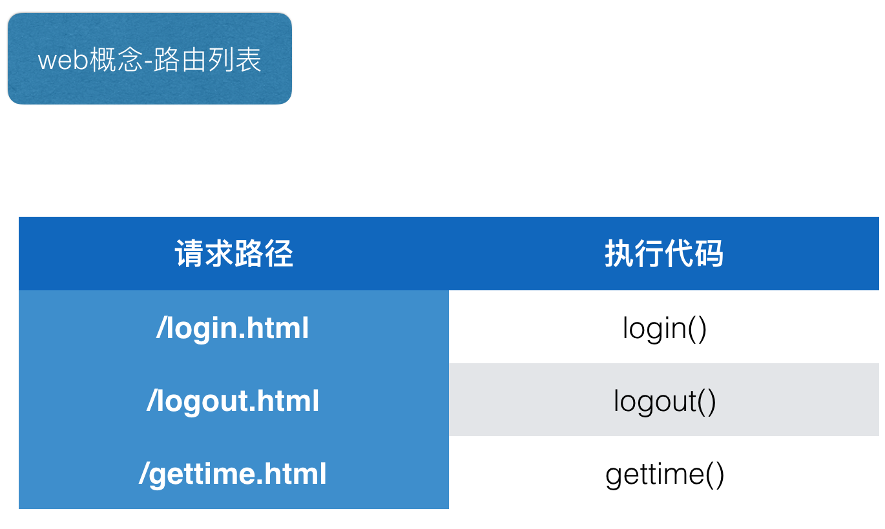

4. 路由
4.1 学习目标
- 能够说出路由的作用
4.2 概念
为什么需要路由 接着上面的场景我们，如果咱们的框架处理的页面请求路径再多一些，比如5个大家可能感觉条件分支完全可以胜任，如果是40个甚至更多呢? 如果这是还是用普通的条件分支简直无法忍受。

4.3 实现
代码中实现的思路就是将 所有的路径和路径对应的执行代码提前放置在路由列表中，待用户请求过来了直接执行请求路径对应的函数即可。
只需要修改框架代码
import time
import re
# ----------更新----------
# 用来存放url路由映射
# url_route = [
# ("/index.py", index_func),
# ("/center.py", center_func)
# ]
g_url_route = list()
def route(url):
def func1(func):
# 添加键值对，key是需要访问的url，value是当这个url需要访问的时候，需要调用的函数引用
g_url_route.append(url,func)
def func2(file_name):
return func(file_name)
return func2
return func1
@route('/index.html')
def index():
"""当用户请求/index.html的时候 执行当前函数返回对应的页面"""
# 读取模板文件
with open("template/index.html", "r") as file:
html_data = file.read()
# 从数据库中读取出数据
data_from_mysql = "have fun!!!"
# 完成模板替换
data = re.sub(r"\{%content%\}", data_from_mysql, html_data)
# 返回网页文件
return data
@route('/gettime.html')
def gettime():
'''当用户请求/gettime.html的时候 执行当前函数'''
return time.ctime()
def app(data_dict):
# 从字典中取出 用户请求路径
path_info = data_dict['PATH_INFO']
# if data_dict['PATH_INFO'] == '/gettime.html':
# return return '200 OK',[('Content-Type','text/html')],time.time()
# elif data_dict['PATH_INFO'] == '/index.html':
# return return '200 OK',[('Content-Type','text/html')],index()
for url,func in route_list:
# 如果路由列表中某个路径和用户请求路径一样 则执行对应的函数
if url == path_info:
return '200 OK',[('Content-Type','text/html')],func()
else:
return '404 Not Found',[('Content-Type','text/html')],'hello this is response body'
总结
- 路由概念 这是web后台程序非常重要的一个特点.路由根据用户的请求,选择对应的函数来处理相应的请求.